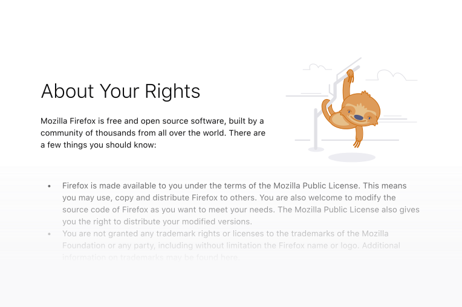
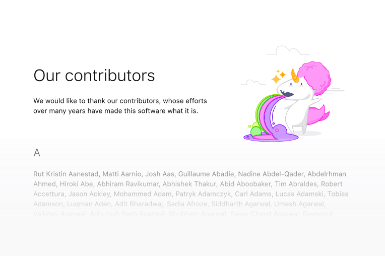

Firefox illustrations are approachable, supportive, and whimsical.
Usage
Illustrations are a visually and emotionally powerful tool. So use them sparingly and carefully identify the right situations for them. If an illustration is used only as a decorative element, it may lose its communicative power and distract people.
Use illustration to encourage users who are frustrated, are lost, or have had something go wrong. Don't use illustration if the user is in danger.
In pages like error pages, the illustration may bring a smile to the user's face
Use illustration to introduce and explain a product or feature. This can be especially helpful for new, misused, or neglected features.
During onboarding, illustrations are used to introduce the user to the product's features
Use illustration to help people understand content by exemplifying it. This is especially useful in text-heavy components like announcements.

In pages like about:rights, the whimisical illustration encourages to read
Use illustration to congratulate or celebrate with people.

A whimisical unicorn celebrates our contributors in the about:credits page
Appearance
Firefox illustrations are created for specific contexts and purposes. They should not be used in any other way without consulting the Content Team first.
Background
Most Firefox illustrations are built for a background of Grey 10 #f9f9fa.
Transparency
Firefox illustrations are built to work without additional adjustments to their opacity.
Dimension
Firefox illustrations should not use more than 40% of the available space, and not less than 20%. They should not be stretched or distorted.
Customization
Firefox illustrations should not be altered in any way, nor should they be combined with any other graphics, without the consent of the Content Team.